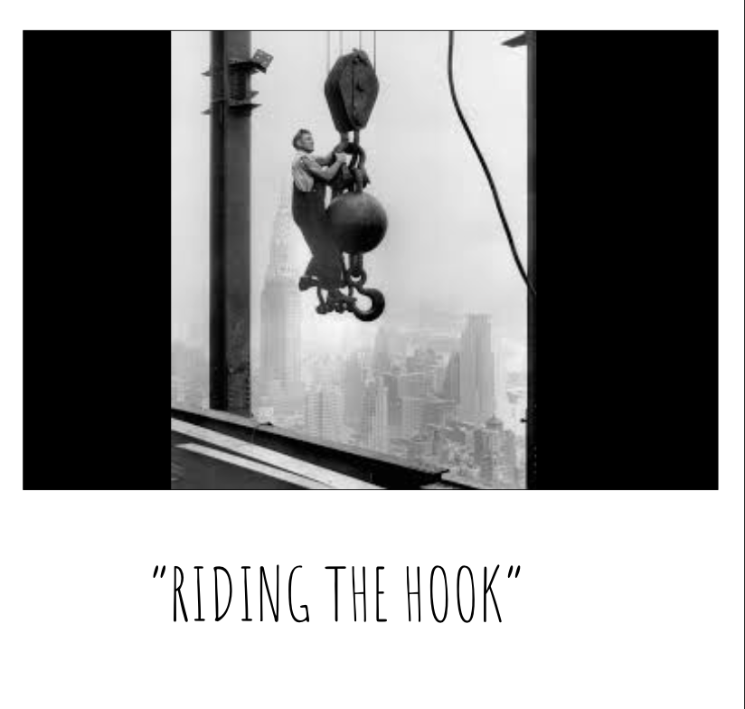

The Heat of DayIn the heat of the day, long hours upon builder labourers were incredibly toiling. This was made especially worse,
due to the lack of ammenities on the site. There were no sheds to hide from the heat, no washrooms to cools and wash off sweat,
and you were lucky if you had a hook to hang your clothes on. Additionally, many still engaged in a practice known as "riding the hook",
where a worker would ride a crane hook all the way to the top in order to scale buildings.
|
 |